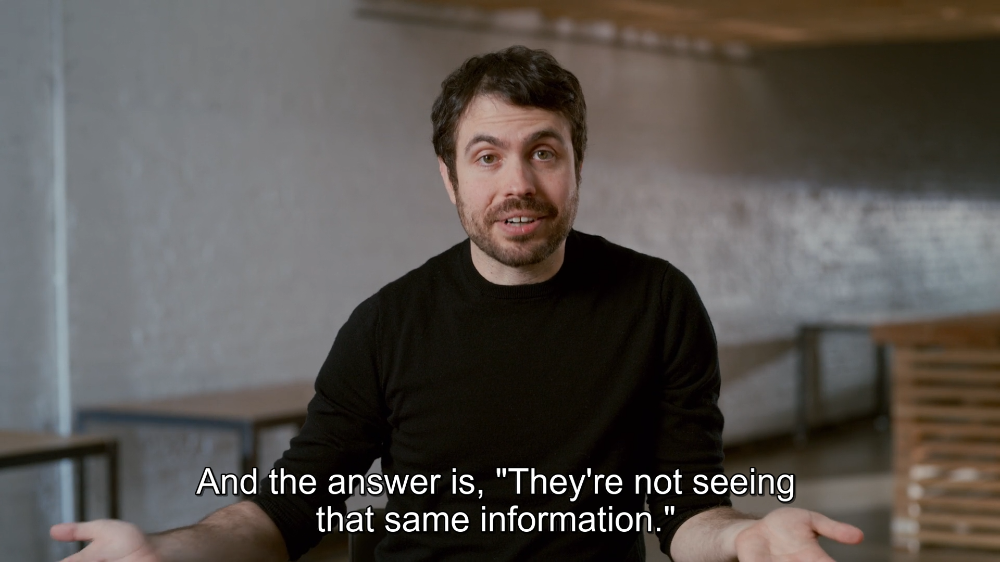
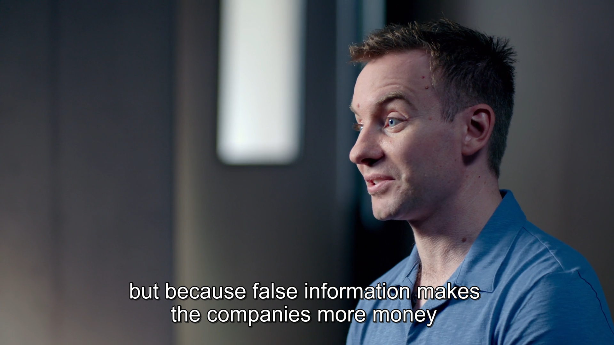
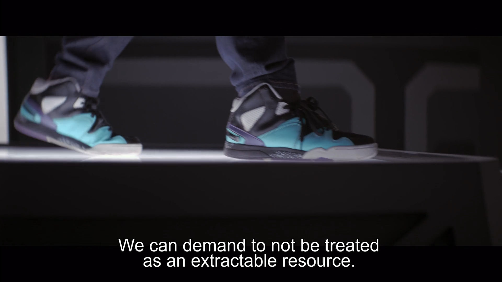

ZVLCY |
I have watched the documentary Social Dilemma by Netflix. To sum it in simple words of what the theme of the documentary is about, it is about ethics, and doing what is humane and right for how we use technology as a tool.
The docu-drama starts off by giving us an early insight on what is exactly the problem? It makes us think about the social applications that we use nowadays, which are mostly free. Who are paying for that? The answer is advertisers. These advertisers need to get their product or whatever they are advertising for to reach our attention.
To be fair, the developers during the early stages of developing these apps didn't want these tools to cause harm for users. However, the need to generate more profit requires the need for artificial intelligences and algorithms to maximize the usability of the apps, thus directing to more profitable outcomes.
These tools are undeniably have led to many good outcomes. However, it may also 'help' to bring out the worst from society. The personalization algorithms in some ways make us seek for social approval or make us feel the need to adhere and follow what the standards that are being set by what we see on social media. These algorithms need our data to help whatever the requests made by the business model or the corporations that just want to make money. However, as people are being addicted to social media, these AI can cause disadvantages to the fabric of society.
The main interviewee in the documentary, Tristan Harris is a former employee in Google. He was called the 'closest thing Silicon Valley has to a conscience' by The Atlantic magazine. He is now a co-founder of the Center for Humane Technology. The other interviewees are also former scientists or engineers or developers of big internet companies, and their worries and concerns regarding these stuff must make us feel alarmed too.
Tristan argued that even though social media is just another tool, just like how bicycles were invented to ease our daily lives, the internet enabled a far bigger scale that maybe we couldn't imagine or aware. With psychological and neorological factors, the way internet can penetrate and influence the way our brain works are actually kind of scary.
With the way how AI and algorithms can personalize every user's data to some unimaginable degree of precision, it is enabling the possibility of a polarized society, and even a worse a polarized nation. What could go wrong? Fractured community? Democratic turbulence? Civil war? The tools are making it possible for such things.
Sometimes stupid people are not all to blame for, but the fact that people no longer want to see true news because people cn no longer able to distinguish what is right and what is wrong.
Gen Z like me is proven to be the most affected by the rise of mobile phones and internet connectivity to social media. The impact is great. From causing depression and anxiety, this same tool can even cause destabilization to a whole country and to a system of governance. Hatred is easily widespread. Fake news are circulated 6 times faster than true news.
The interviewees use examples of people such as flat-earthers and conspiracy theorists. How they used this tool to spread disinformation or misinformation to generate widespread chaos and uncertainty. These are people in a society, maybe small in number but with help of the AI and algorithm, they can make lies seem like the truth. Algorithm cannot determine what is true and what is false every single time.
When we talk about data personalization, we talk about personal information and privacy. Why we trust telecommunication companies to not give away our information to unauthorized parties? Because there are laws about that. The same thing should happen for digital content and information. There should be regulations. Internet corporations think their regulations are enough but actually, they just follow what the highest bidders told them to. This is where ethics should play an important role.
Maybe when we put ourselves in the position of how dead trees are more valuable financially than living trees, only then we realize we should not let ourselves lost the battle against computer algorithms. AI should remain a tool that work for us, not to manipulate us.
Overall, I see this documentary to be eye-opening and should make us be more aware on reflect on our time spend with social media and internet in general. I personally want to thank these technology experts who realize what is going wrong and chose to address the problems and invites us to understand this matter. Internet is great for commercialization but without ethical values, there is more possibility for destruction rather that prosperity for our civilzation. To end my reflection, I quote the lyrics from a Black Sabbath song, End of The Beginning which I think sums up perfectly about this world-concerning topic.
Is this the end of the beginning?
Or the beginning of the end?
Losing control or are you winning?
Is your life real or just pretend?
Reanimation of the sequence
Rewinds the future to the past
To find the source of the solution
The system has to be recast
Release your mind
Fast forward to the secrets of your soul
Your life's on overload
Delete or save
The units that make you an entity
That's your identity
If you don't know which way to go
You might be lost and confused
A second chance no time to lose
Regeneration of your cyber sonic soul
Transforming time and space beyond control
Rise up, resist, and be the master of your fate
Don't look badly for today, tomorrow is too late
You don't wanna be a robot ghost
Occupied inside the human host
Analyzed and cloned relentlessly
Synthesized until they set you free
Alright, okay, alright
'Til they set you free
Alright, okay
'Til they set you free
This work is posted by: